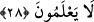
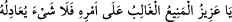

nerede? Kim O’nunla ortaklıktan dem vurabilir? “ (O tektir, ortağı yoktur.)”
O’nun sıfatıdır. “O’nun eşsiz/tek (el-Ferd)” olması ma’rifetin aslıdır. O’nun birliğine
şirk erişemez. Akıl O’nun zâtının künhünden haberdar değildir. Kibriyâ ve celâl olanın
yolunda şirk uygun değildir, şerîk/ortak olması da muhaldir.
“el-Azîz” ismiyle Allah’a yaklaşmak bu ismin mânâsına sıkıca sarılmaya bağlıdır. Bu
da yaratılmışlardan bir şey beklememekle olur. Çünkü izzet bundadır. “el-Azîz” ismini
kırk gün kırkar kere zikreden kimseye Allah yardım eder ve aziz kılar. Onu
yarattıklarından hiçbirine muhtaç etmez.
el-Erbaûne’l-İdrîsiyye’de: “ (Ey Azîz, erişilmez/güçlü,
işinde mutlak üstün olup da hiçbir şey kendisine denk olmayan!)” denilmiştir.
Sühreverdî der ki: “Kim bunu peş peşe yedi gün her günde bin kere okursa hasmını
helak eder. Eğer bu ismi yetmiş kere düşman askerinin yüzüne okur ve eliyle onlara
işâret ederse düşman askeri mağlub olur.”
“el-Hakîm” ismiyle Allah’a yaklaşmak, işlerinde Allah’ın hikmetini gözetmekle ve
şerîatta gelen hikmetleri öne alarak, sonra da âdette olanları uygulayarak hikmete göre
hareket etmekledir. Böyle yapan kimse şer’î bakımdan bir kimsenin kendisine îtiraz
etmesinden kurtulur.
“el-Hakîm” isminin özelliği belâ ve musibetleri def’ edip hikmet kapısını açmaktır.
Kim bu ismi çok zikrederse korktuğu bela ve musibetler ondan geri çevrilir ve ona
hikmetten bir kapı açılır.
Biz kullar hakkında hikmet, söz ve amelde hakka isâbet etmektir. Allah Teâlâ hakkında
ise eşyayı tanımak ve onları son derece sağlam/hikmete uygun olarak var etmektir.
Bazıları der ki: Hikmet müştereken iki mânâda kullanılır: Birincisi, diri olanın eşyayı
gerçekte olduğu gibi bilmesidir. İkincisi, diri olandan muhkem ve bir çok meziyetleri
kendisinde toplayan fiiller meydana gelir olmasıdır. Hikmetle ilgili diğer açıklamalar
Lokman sûresinin tefsîrinde geçmişti.
İlim tahsil etmede, amel konusunda gayret göstermede ve eşyayı hakîkati üzere
ma’rifette/bilmekte yardım Allah’tandır.
28. Biz seni bütün insanlara ancak müjdeleyici ve uyarıcı olarak gönderdik; fakat
insanların çoğu bunu bilmezler.
Ey Muhammed! “Biz seni” onların kızılını ve siyahını kuşatıcı olduğun halde “bütün
insanlara” genel ve şâmil olarak ya da tebliğde onları toplayıcı olarak “ancak
müjdeleyici” mü’minleri cennetle, âşıkları rü’yet ile müjdeleyici “ve uyarıcı” kâfirleri
cehennem ile ve münkirleri hicâb/Hak’tan perdelenmekle korkutucu “olarak